20 all-American favorites, made with a little more love
BIG FLAVOR · CLEAR STEPS · NO BORING BITES
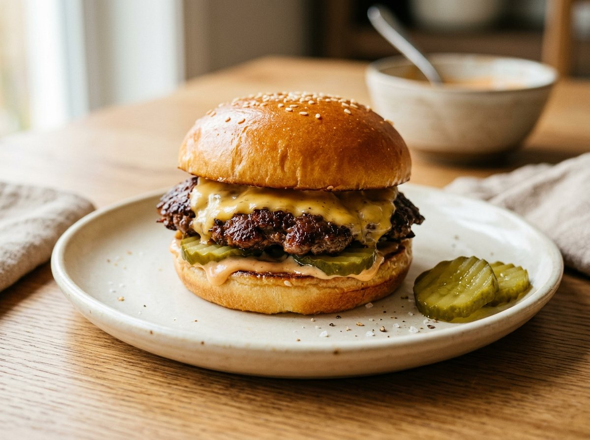
The good stuff belongs at home.
A cook-at-home companion to the Grandma Rosie 15-second recipe series
GRANDMA ROSIEA NOTE FROM ROSIE
PULL UP A CHAIR
Welcome to Rosie's kitchen.
The videos may be 15 seconds. Dinner still takes the time it takes.
This book is the cook-at-home companion to the Grandma Rosie recipe series: twenty familiar American favorites, written for real kitchens and hungry people. You will find crisp burgers, creamy pasta, breakfast sandwiches, quick snacks, and a few sweet reasons to preheat the oven.
Every recipe starts with a finished-dish image and a three-panel prep, cook, and finish illustration. You will also find the yield, timing, equipment, measured ingredients, clear steps, and a practical storage note. The photos are visual inspiration; ingredients, brands, ovens, and plating can change the final look.
Rosie's rule is simple: no long introductions, no mystery measurements, and no shame in using a shortcut when the day is busy. Read the recipe through once, gather what you need, and let the skillet do the talking.
GRANDMA ROSIE SAYSGood food doesn't need a long speech. It needs a hot pan, a little patience, and enough cheese.
Grandma Rosie is a fictional cooking persona created for this collection.
GRANDMA ROSIEBEFORE YOU COOK
THE ROSIE KITCHEN GUIDE
A few good things to know.
The recipes use familiar U.S. kitchen measures first. Metric amounts are practical approximations; for baking, a scale is the surest way to get consistent results.
MEASUREMENTS
1 cup liquid = 240 ml
1 tablespoon = 15 ml
1 teaspoon = 5 ml
1 ounce = about 28 g
Spoon flour into the cup and level it; don't pack it.
OVEN CONVERSIONS
325°F = 165°C
350°F = 175°C
375°F = 190°C
400°F = 200°C
425°F = 220°C
SAFE TEMPERATURES
Ground beef: 160°F / 71°C
Poultry: 165°F / 74°C
Reheated leftovers: 165°F / 74°C
Use an instant-read thermometer in the thickest part.
A FEW KITCHEN HABITS
Preheat the oven fully.
Grate cheese from a block for smoother melting.
Keep raw meat separate from ready-to-eat foods.
Refrigerate perishable leftovers within 2 hours.
People with food allergies should check every package label and adapt the recipe safely.
GRANDMA ROSIEFIND YOUR FAVORITE
THE RECIPE INDEX
Twenty very good reasons to eat.
The page number points to the recipe's photo and ingredient list.
GRANDMA ROSIEBURGERS & SANDWICHESThe finished burger: browned edges, melted cheese, and a little Rosie sauce.
PREP
Mix the quick sauce; portion cold beef.
SEAR
Smash in a hot pan; add cheese.
BUILD
Stack bun, patty, pickles, and sauce.
RECIPE 01 · BURGERS & SANDWICHES
Grandma Rosie's Smash Burger
A crisp-edged, juicy burger with the kind of cheese pull that ends the conversation.
PREP10 minCOOK10 minTOTAL20 minMAKES4 burgers
Ingredients
Gather these first
1 lb (450 g) 80/20 ground beef, cold
4 soft burger buns, split
4 slices American cheese
1 tsp kosher salt, divided
1/2 tsp freshly ground black pepper
1 tsp neutral oil, for the pan
1/4 cup (60 g) mayonnaise
1 tbsp ketchup
1 tsp yellow mustard
1 tsp pickle brine, plus dill pickles to serve
YOU'LL NEED 12-inch cast-iron or heavy skillet, sturdy spatula, parchment paper
GRANDMA ROSIEFROM ROSIE'S KITCHEN
RECIPE 01 · BURGERS & SANDWICHES
Let's make it.
Grandma Rosie's Smash Burger 20 min total
01
Mix the Rosie sauce
Stir the mayonnaise, ketchup, mustard, and pickle brine together. Set it near the stove so the burgers can be assembled while hot.
02
Toast the buns
Heat the dry skillet over medium heat. Toast the cut sides of the buns until golden, about 45 seconds. Set aside.
03
Smash for the crust
Raise the heat to high and add the oil. Divide beef into four loose balls. Working one at a time, place a ball in the pan, cover with parchment, and press firmly with a sturdy spatula until about 1/4 inch (6 mm) thick. Season with salt and pepper.
04
Flip and melt
Cook without moving for 1 1/2 to 2 minutes, until the edges are deeply browned. Scrape underneath, flip, add a slice of cheese, and cook 45 to 60 seconds more, until the beef reaches 160°F (71°C) and the cheese melts.
05
Build the burger
Spread sauce on the buns, add the hot patty and pickles, close the bun, and serve right away. For a double, stack two patties per bun.
ROSIE'S TIP
Don't pack the beef into a tight meatball. Loose beef makes the lacy, crispy edges that a thick patty can only dream about.
MAKE AHEAD & STORAGE
Best eaten immediately. Refrigerate cooked patties in a sealed container for up to 3 days; reheat in a skillet until steaming hot.
SERVE IT WITH
Serve with crinkle-cut fries, a dill pickle, and extra Rosie sauce.
Times are estimates. Oven and air-fryer performance varies by model.
GRANDMA ROSIECOMFORT FOOD
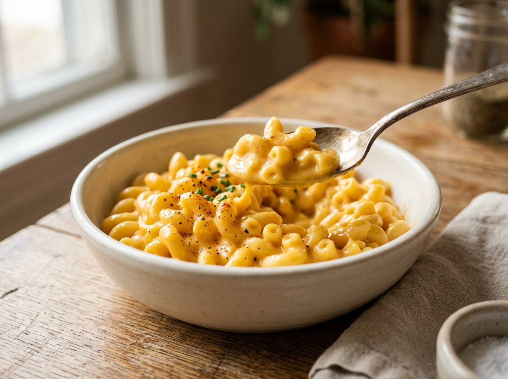
A spoonable bowl of creamy cheddar macaroni, ready to serve.
START
Add dry pasta and milk to the pot.
SIMMER
Stir often until just tender.
FINISH
Fold in cheddar until glossy.
RECIPE 02 · COMFORT FOOD
Three-Ingredient Stovetop Mac & Cheese
Creamy, cozy, and made without a powdered orange packet in sight.
PREP5 minCOOK15 minTOTAL20 minMAKES4
Ingredients
Gather these first
8 oz (225 g) elbow macaroni
3 cups (720 ml) whole milk, plus a splash if needed
2 cups (200 g) sharp cheddar, freshly grated
Kosher salt, optional and not counted among the three main ingredients
YOU'LL NEED Medium heavy-bottomed saucepan, wooden spoon, box grater
GRANDMA ROSIEFROM ROSIE'S KITCHEN
RECIPE 02 · COMFORT FOOD
Let's make it.
Three-Ingredient Stovetop Mac & Cheese 20 min total
01
Warm the pasta and milk
Put the macaroni and milk in a heavy saucepan. Bring to a gentle simmer over medium heat, stirring often and scraping the corners so nothing sticks.
02
Cook until just tender
Keep the milk at a quiet simmer, never a hard boil. Cook 9 to 12 minutes, stirring every 30 seconds, until the pasta is al dente and most of the milk has thickened around it.
03
Make it cheesy
Turn off the heat. Add the cheddar in three handfuls, stirring until each addition melts before adding the next. Taste and add a small pinch of salt if the cheese needs it.
04
Rest and serve
Let the pot stand for 2 minutes; the sauce will cling to the noodles as it settles. If it becomes too thick, stir in warm milk 1 tablespoon at a time.
ROSIE'S TIP
Grate the cheese yourself. Pre-shredded cheese is coated to keep it separate, and that coating can make a silky sauce turn grainy.
MAKE AHEAD & STORAGE
Refrigerate for up to 3 days. Reheat gently on the stove with 1 to 2 tablespoons of milk per serving; do not boil.
SERVE IT WITH
Add a green salad or roasted broccoli if you want to pretend this is a balanced dinner. I won't tell.
Times are estimates. Oven and air-fryer performance varies by model.
GRANDMA ROSIEFAST-FOOD FAVORITES
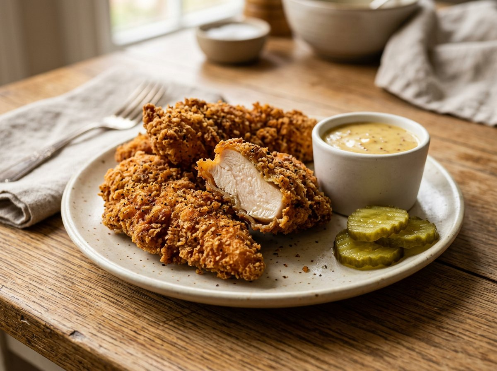
Golden panko tenders with honey mustard for dipping.
BREAD
Set up flour, buttermilk, and panko.
AIR-FRY
Cook in one layer until crisp.
SERVE
Pair golden tenders with the dip.
RECIPE 03 · FAST-FOOD FAVORITES
Air-Fryer Crispy Chicken Tenders
Crunchy, tender, and ready for a dunk in honey mustard.
PREP20 minCOOK12 minTOTAL32 minMAKES4
Ingredients
Gather these first
1 1/2 lb (680 g) chicken tenderloins
1 cup (240 ml) buttermilk
1 large egg
3/4 cup (95 g) all-purpose flour
1 1/2 cups (90 g) panko breadcrumbs
1 tsp paprika
1 tsp garlic powder
1 tsp kosher salt
1/2 tsp black pepper
Neutral-oil spray
For dipping: 1/4 cup mayonnaise, 1 tbsp honey, and 1 tsp Dijon mustard
YOU'LL NEED Air fryer, three shallow bowls, instant-read thermometer
GRANDMA ROSIEFROM ROSIE'S KITCHEN
RECIPE 03 · FAST-FOOD FAVORITES
Let's make it.
Air-Fryer Crispy Chicken Tenders 32 min total
01
Season the chicken
Pat the tenders dry. Whisk the buttermilk and egg in one bowl. In a second bowl, combine flour, paprika, garlic powder, salt, and pepper. Put panko in a third bowl.
02
Bread each tender
Coat a piece of chicken in seasoned flour, dip it in the buttermilk mixture, then press it into the panko. Set on a rack and repeat. Let the coating sit for 5 minutes so it adheres.
03
Air-fry in batches
Heat the air fryer to 400°F (200°C). Arrange tenders in one layer with space between them; spray the tops lightly with oil. Cook 10 to 12 minutes, turning once, until deeply golden and 165°F (74°C) inside.
04
Stir the dip
While the chicken cooks, stir mayonnaise, honey, and Dijon together. Add a pinch of salt if desired. Serve the tenders hot with the dip.
ROSIE'S TIP
If the basket is crowded, the coating steams instead of crisping. Give each tender a little personal space; even chicken needs boundaries.
MAKE AHEAD & STORAGE
Refrigerate for up to 3 days. Re-crisp in an air fryer at 350°F (175°C) for 3 to 5 minutes; avoid microwaving if you want to keep the crunch.
SERVE IT WITH
Try honey mustard, ranch, barbecue sauce, or a squeeze of lemon with crunchy slaw.
Times are estimates. Oven and air-fryer performance varies by model.
GRANDMA ROSIEBREAKFAST & BRUNCH
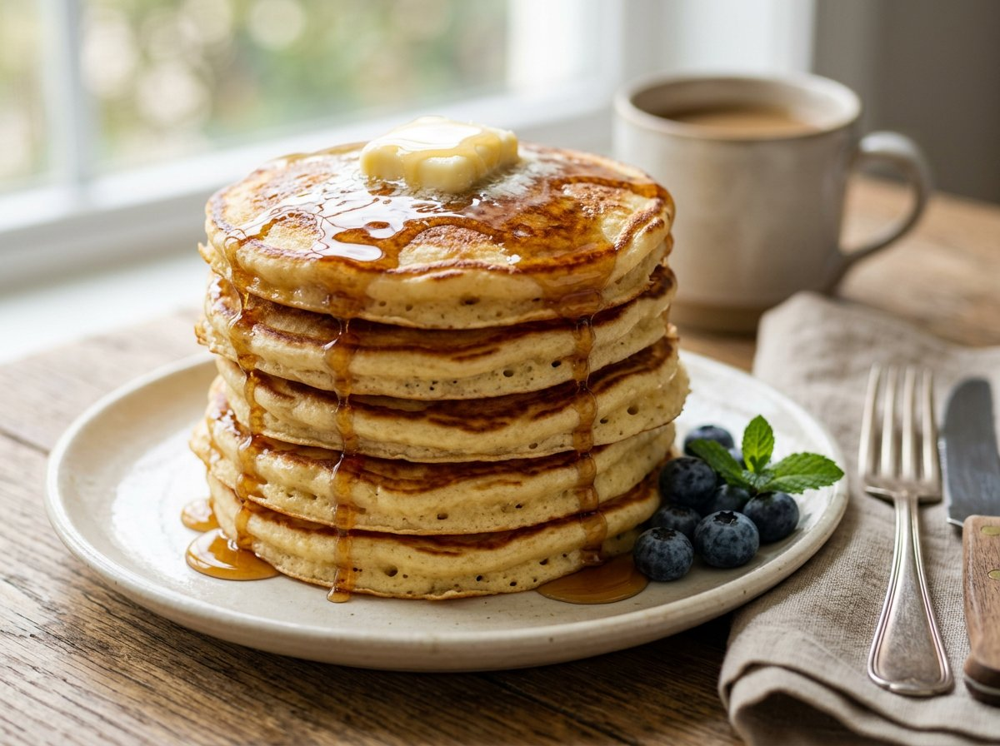
A tall stack with melting butter and maple syrup.
MIX
Whisk wet and dry bowls separately.
GRIDDLE
Flip when bubbles set on top.
STACK
Add butter and warm maple syrup.
RECIPE 04 · BREAKFAST & BRUNCH
Fluffy American Buttermilk Pancakes
Tall, tender pancakes with crisp buttery edges and real maple syrup.
YOU'LL NEED Two mixing bowls, whisk, nonstick skillet or griddle
GRANDMA ROSIEFROM ROSIE'S KITCHEN
RECIPE 04 · BREAKFAST & BRUNCH
Let's make it.
Fluffy American Buttermilk Pancakes 25 min total
01
Whisk the dry ingredients
In a large bowl, whisk the flour, sugar, baking powder, baking soda, and salt until evenly combined.
02
Mix the wet ingredients
In another bowl, whisk the buttermilk, egg, melted butter, and vanilla. Pour into the dry ingredients and fold just until no dry flour remains. A few small lumps are welcome.
03
Heat the griddle
Warm a lightly buttered skillet over medium heat, about 350°F (175°C). A drop of water should dance and disappear, not smoke.
04
Cook the pancakes
Pour 1/4 cup (60 ml) batter for each pancake. Cook until bubbles appear and the edges look set, about 2 minutes. Flip once and cook 1 to 2 minutes more until golden and springy.
05
Serve warm
Stack the pancakes, add butter, and drizzle with maple syrup. Keep finished pancakes on a rack in a 200°F (95°C) oven while you cook the rest.
ROSIE'S TIP
Stop mixing when the flour disappears. Smooth batter makes flat pancakes; a few lumps make the tall, fluffy ones.
MAKE AHEAD & STORAGE
Refrigerate cooked pancakes for up to 3 days or freeze between parchment sheets for 2 months. Reheat in a toaster or a 300°F (150°C) oven.
SERVE IT WITH
Fresh berries, sliced bananas, crisp bacon, or a spoonful of peanut butter all feel right at the breakfast table.
Times are estimates. Oven and air-fryer performance varies by model.
GRANDMA ROSIEBREAKFAST & BRUNCH
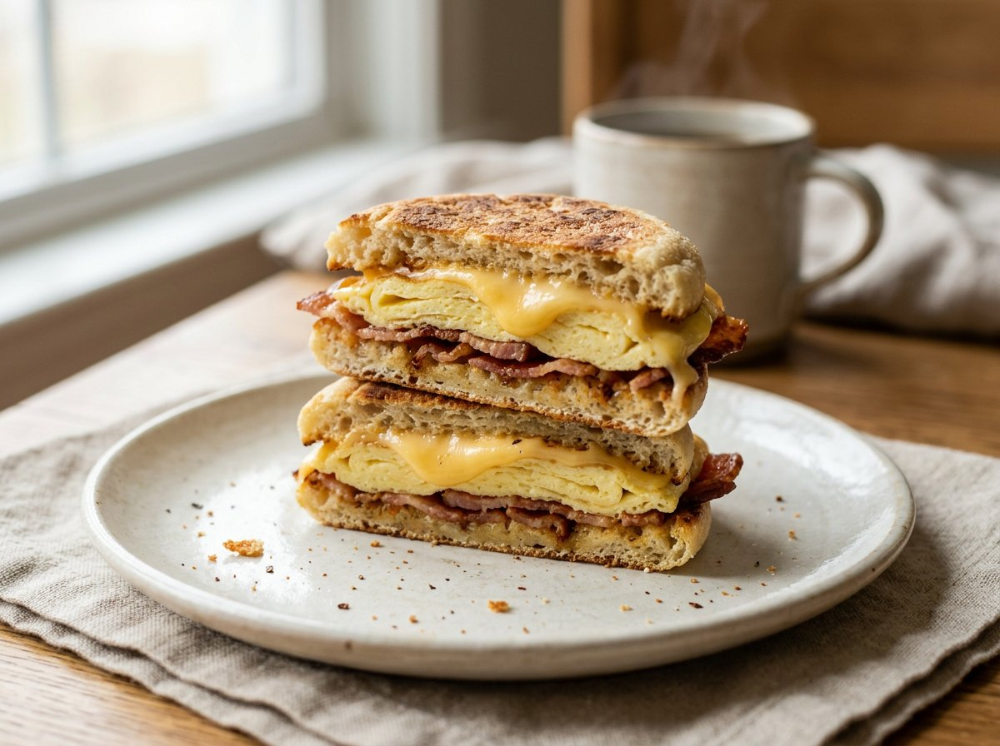
Toasted muffin, folded egg, bacon, and melted American cheese.
PREP
Cook bacon and toast the muffins.
FRY
Set eggs gently in a skillet.
STACK
Layer egg, cheese, and bacon.
RECIPE 05 · BREAKFAST & BRUNCH
Bacon, Egg & Cheese Breakfast Sandwich
The diner-counter classic you can make before the coffee gets cold.
PREP8 minCOOK12 minTOTAL20 minMAKES4 sandwiches
Ingredients
Gather these first
4 English muffins, split
8 slices bacon
4 large eggs
4 slices American cheese
1 tbsp (14 g) unsalted butter
Kosher salt and black pepper
Hot sauce or ketchup, optional
YOU'LL NEED Large skillet, small nonstick skillet, paper towels
GRANDMA ROSIEFROM ROSIE'S KITCHEN
RECIPE 05 · BREAKFAST & BRUNCH
Let's make it.
Bacon, Egg & Cheese Breakfast Sandwich 20 min total
01
Cook the bacon
Place bacon in a cold skillet and set over medium heat. Cook, turning as needed, until crisp, 8 to 10 minutes. Transfer to paper towels and pour off all but 1 teaspoon of the drippings.
02
Toast the muffins
Toast the English muffins cut-side down in the same skillet until golden, 1 to 2 minutes. Keep warm.
03
Fry the eggs
Melt the butter in a nonstick skillet over medium-low heat. Crack in the eggs, season lightly, and cook until the whites are fully set and the yolks are cooked to your preference. For a neat stack, break the yolks and fold each egg into a square; cook until no liquid egg remains.
04
Melt and stack
Place a slice of cheese on each hot egg for 30 seconds. Set the eggs on the toasted muffin bottoms, add two bacon slices, close the sandwiches, and serve.
ROSIE'S TIP
Low heat gives you tender eggs. High heat gives you a rubber coaster with ambitions.
MAKE AHEAD & STORAGE
For meal prep, cool the cooked eggs and bacon completely, then refrigerate separately for up to 3 days. Assemble and reheat just before eating.
SERVE IT WITH
Add a sliced tomato, a little hot sauce, or a hash-brown patty tucked right inside.
Times are estimates. Oven and air-fryer performance varies by model.
GRANDMA ROSIEFAST-FOOD FAVORITES
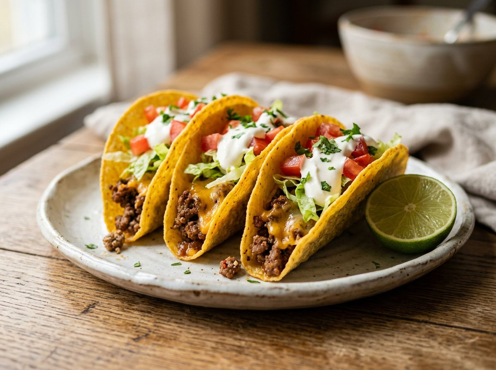
Crunchy shells loaded with seasoned beef, cheddar, lettuce, and tomato.
BROWN
Break beef into small crumbles.
SIMMER
Add spices and a splash of water.
FILL
Load warm shells with toppings.
RECIPE 06 · FAST-FOOD FAVORITES
Cheesy Weeknight Beef Tacos
Seasoned beef, crunchy shells, and enough cheddar to make Tuesday feel festive.
PREP10 minCOOK15 minTOTAL25 minMAKES4 (8 tacos)
Ingredients
Gather these first
1 lb (450 g) lean ground beef
8 crunchy taco shells
1 tbsp neutral oil, if needed
2 tsp chili powder
1 tsp ground cumin
1 tsp smoked paprika
1/2 tsp garlic powder
3/4 tsp kosher salt
1/2 cup (120 ml) water
1 1/2 cups (150 g) shredded cheddar
1 cup shredded lettuce, 1 diced tomato, and sour cream, for topping
YOU'LL NEED Large skillet, sheet pan, small bowls for toppings
GRANDMA ROSIEFROM ROSIE'S KITCHEN
RECIPE 06 · FAST-FOOD FAVORITES
Let's make it.
Cheesy Weeknight Beef Tacos 25 min total
01
Brown the beef
Heat a skillet over medium-high. Add the beef and cook, breaking it into small crumbles, until no pink remains and the meat reaches 160°F (71°C), about 6 to 8 minutes. Drain excess fat if needed.
02
Season and simmer
Stir in chili powder, cumin, paprika, garlic powder, salt, and water. Simmer uncovered for 4 to 5 minutes, stirring occasionally, until glossy and lightly saucy.
03
Warm the shells
Arrange taco shells on a sheet pan and warm according to the package directions, usually 3 to 5 minutes at 350°F (175°C).
04
Fill and finish
Divide the beef among the shells. Top with cheddar, lettuce, tomato, and sour cream. Serve at once while the shells are crisp.
ROSIE'S TIP
Let the beef simmer with the spices for a few minutes. A packet dumped over dry meat is not a seasoning strategy; it's a cry for help.
MAKE AHEAD & STORAGE
Refrigerate the beef separately for up to 3 days. Reheat until steaming hot, then fill freshly warmed shells so they stay crunchy.
SERVE IT WITH
Set out salsa, lime wedges, pickled jalapeños, and guacamole so everyone can build their own.
Times are estimates. Oven and air-fryer performance varies by model.
GRANDMA ROSIESNACKS & SIDES
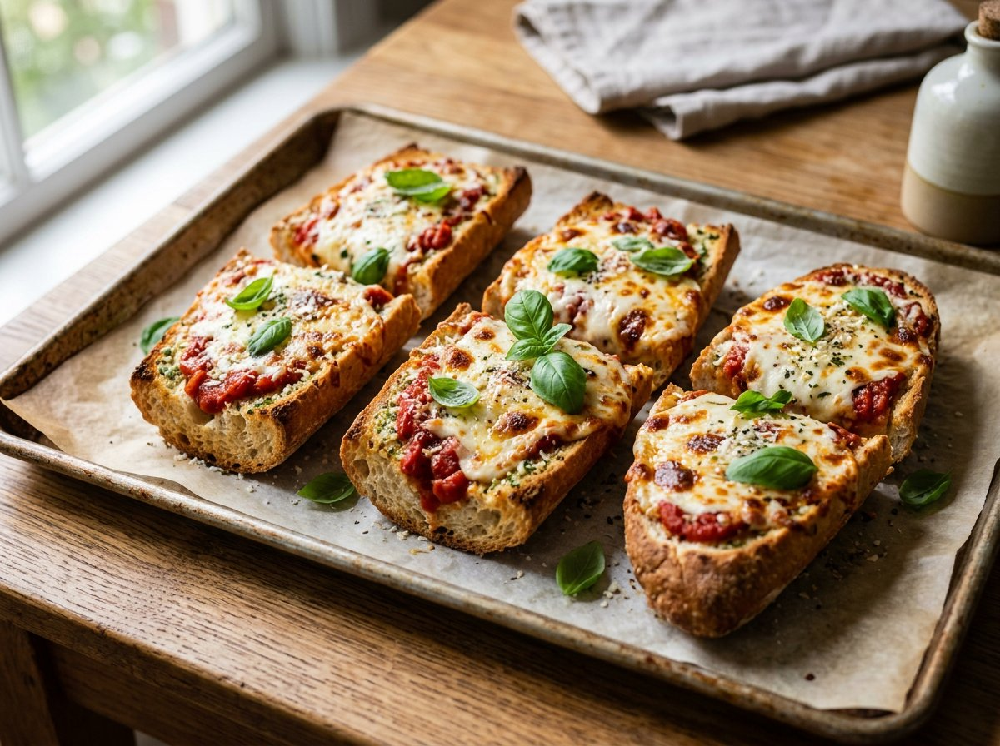
Baguette halves with garlic butter, red sauce, and browned mozzarella.
PREP
Split baguette and spread garlic butter.
BAKE
Add sauce and cheese; bake bubbly.
SLICE
Top with basil and cut to share.
RECIPE 07 · SNACKS & SIDES
Garlic-Butter Pizza Bread
Crispy baguette, garlicky butter, marinara, and bubbling mozzarella.
PREP10 minCOOK15 minTOTAL25 minMAKES4 to 6
Ingredients
Gather these first
1 large French baguette (about 12 oz / 340 g)
4 tbsp (56 g) unsalted butter, softened
2 garlic cloves, finely grated
1/2 tsp Italian seasoning
1 cup (240 ml) marinara sauce
2 cups (200 g) shredded low-moisture mozzarella
2 tbsp grated Parmesan
Fresh basil, for finishing
YOU'LL NEED Rimmed sheet pan, small bowl, sharp bread knife
GRANDMA ROSIEFROM ROSIE'S KITCHEN
RECIPE 07 · SNACKS & SIDES
Let's make it.
Garlic-Butter Pizza Bread 25 min total
01
Heat the oven
Set a rack in the center and heat the oven to 425°F (220°C). Line a sheet pan with parchment.
02
Make garlic butter
Stir the softened butter, grated garlic, and Italian seasoning together. Split the baguette lengthwise and place cut-side up on the pan.
03
Toast the bread
Spread the garlic butter over the cut surfaces. Bake 4 to 5 minutes, just until the edges begin to crisp. This quick toast helps keep the bread from turning soggy.
04
Top and bake
Spoon marinara over the bread, leaving a narrow border. Scatter mozzarella and Parmesan evenly. Bake 8 to 10 minutes, until the cheese bubbles and the edges are golden.
05
Slice and serve
Rest 2 minutes, add basil, and cut into thick pieces with a serrated knife.
ROSIE'S TIP
Toast the bread before adding sauce. Soggy pizza bread is just a very confused sponge.
MAKE AHEAD & STORAGE
Store leftovers in the refrigerator for up to 2 days. Reheat on a sheet pan at 375°F (190°C) for 6 to 8 minutes; the microwave softens the crust.
SERVE IT WITH
A bowl of marinara for dipping and a simple green salad make this a proper lunch.
Times are estimates. Oven and air-fryer performance varies by model.
GRANDMA ROSIESNACKS & SIDES
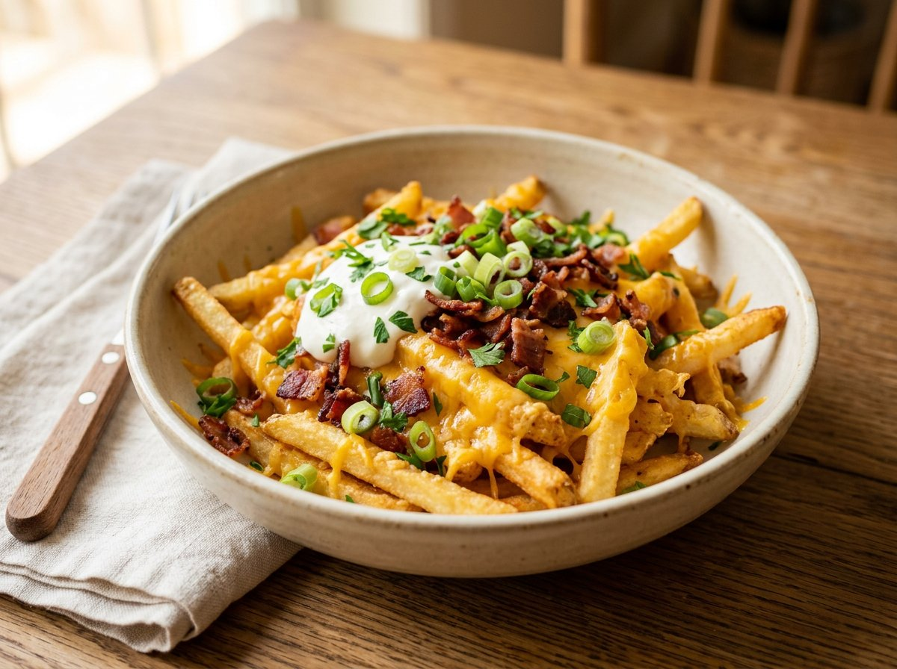
A shareable bowl of crisp fries with cheddar, bacon, sour cream, and chives.
CRISP
Bake fries in one even layer.
MELT
Add cheddar and bacon to hot fries.
FINISH
Dollop sour cream; scatter onions.
RECIPE 08 · SNACKS & SIDES
Loaded Cheesy Fries
Crispy fries, melted cheddar, smoky bacon, cool sour cream, and green onion.
PREP10 minCOOK30 minTOTAL40 minMAKES4 as a snack
Ingredients
Gather these first
1 1/2 lb (680 g) frozen straight-cut fries
1 cup (100 g) sharp cheddar, freshly grated
4 strips bacon, cooked crisp and crumbled
1/3 cup (80 g) sour cream
2 green onions, thinly sliced
1 small jalapeño, seeded and sliced, optional
Black pepper, to taste
YOU'LL NEED Sheet pan or air fryer, oven-safe serving dish, skillet
GRANDMA ROSIEFROM ROSIE'S KITCHEN
RECIPE 08 · SNACKS & SIDES
Let's make it.
Loaded Cheesy Fries 40 min total
01
Crisp the fries
Heat the oven to the temperature on the fry package, usually 425°F (220°C). Spread fries in a single layer on a preheated sheet pan and bake, turning once, until deeply golden and crisp, about 25 to 30 minutes. Air-fry in batches if preferred.
02
Cook the bacon
While the fries bake, cook bacon in a skillet over medium heat until crisp. Drain on paper towels, then crumble.
03
Melt the cheese
Pile the hot fries in an oven-safe dish. Scatter cheddar and bacon over the top. Return to the oven for 2 to 3 minutes, just until the cheese melts.
04
Finish and share
Dollop with sour cream and finish with green onions, jalapeño, and black pepper. Serve immediately with forks for the table.
ROSIE'S TIP
Crisp the fries first and add cheese second. If you cover them from the start, you get steamed potato sticks. Nobody ordered that.
MAKE AHEAD & STORAGE
These are best straight from the oven. Refrigerate leftovers for up to 2 days and re-crisp uncovered at 400°F (200°C) for 8 to 10 minutes.
SERVE IT WITH
Add ranch or barbecue sauce on the side. For a heartier plate, top with leftover taco beef or pulled chicken.
Times are estimates. Oven and air-fryer performance varies by model.
GRANDMA ROSIECOMFORT FOOD
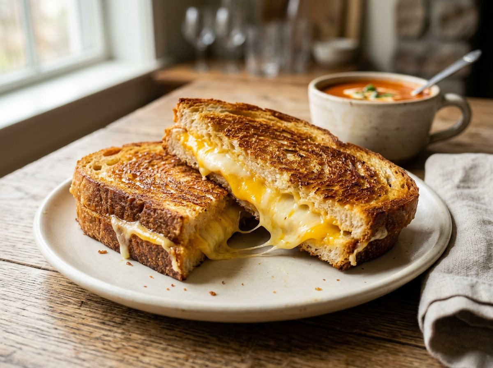
Golden sourdough with melted cheese stretching between the halves.
BUILD
Butter bread; sandwich the cheese.
TOAST
Cook low until both sides are golden.
SLICE
Cut when the middle is stretchy.
RECIPE 09 · COMFORT FOOD
Crispy Two-Cheese Grilled Cheese
Buttery, golden bread around a blanket of stretchy cheddar and Monterey Jack.
PREP8 minCOOK12 minTOTAL20 minMAKES4 sandwiches
Ingredients
Gather these first
8 slices sourdough or sturdy white bread
1 1/2 cups (150 g) sharp cheddar, grated
1 cup (100 g) Monterey Jack, grated
4 tbsp (56 g) softened butter
1 tsp Dijon mustard, optional
Tomato soup, for serving
YOU'LL NEED Large skillet or griddle, spatula, box grater
GRANDMA ROSIEFROM ROSIE'S KITCHEN
RECIPE 09 · COMFORT FOOD
Let's make it.
Crispy Two-Cheese Grilled Cheese 20 min total
01
Build the sandwiches
Mix cheddar and Monterey Jack. Spread butter on one side of each bread slice. Turn four slices butter-side down; spread a thin swipe of Dijon on the inside if using and add the cheese. Close with the remaining bread, butter-side out.
02
Cook low and slow
Heat a skillet over medium-low. Cook sandwiches in batches for 3 to 4 minutes per side, pressing gently with a spatula, until the bread is evenly golden.
03
Let the cheese catch up
If the bread is browning before the cheese melts, lower the heat and cover the skillet for 1 minute. Remove the lid for the last 30 seconds to keep the crust crisp.
04
Slice and serve
Rest each sandwich for 1 minute, then cut diagonally. Serve with hot tomato soup for dunking.
ROSIE'S TIP
Low heat is the secret. A sandwich is not late for work; give the cheese time to melt before you rush it.
MAKE AHEAD & STORAGE
Grilled cheese is best fresh. If needed, cool and refrigerate for up to 1 day, then reheat in a dry skillet over low heat until crisp and hot.
SERVE IT WITH
Classic tomato soup, dill pickles, or a handful of kettle chips.
Times are estimates. Oven and air-fryer performance varies by model.
GRANDMA ROSIEFAST-FOOD FAVORITES
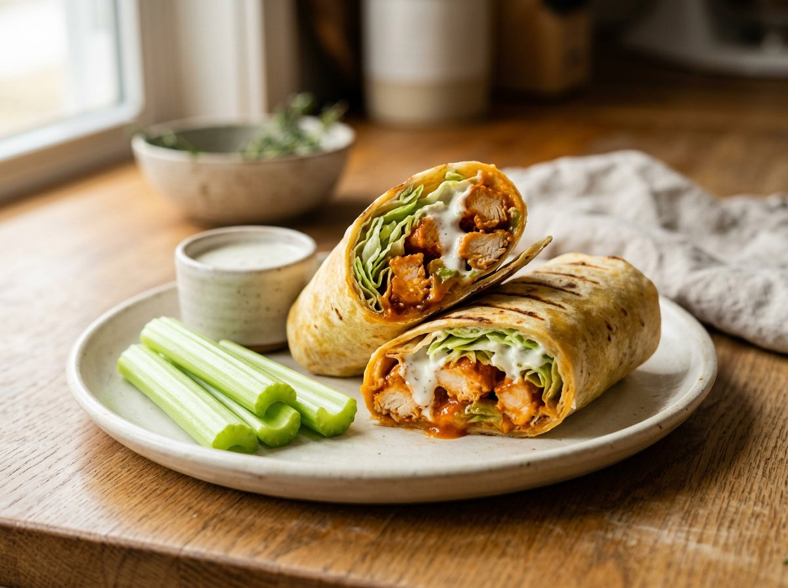
A crisped tortilla wrap showing Buffalo chicken, lettuce, and ranch.
TOSS
Warm chicken with Buffalo sauce.
TOAST
Roll tight; sear seam-side down.
SERVE
Cut across; add ranch and celery.
RECIPE 10 · FAST-FOOD FAVORITES
Buffalo Chicken Crunch Wraps
Spicy chicken, cool ranch, crunchy lettuce, and plenty of cheddar in a toasted wrap.
PREP12 minCOOK8 minTOTAL20 minMAKES4 wraps
Ingredients
Gather these first
2 cups (about 300 g) cooked shredded chicken
1/3 cup (80 ml) Buffalo wing sauce
4 large flour tortillas (10 inches / 25 cm)
1 cup (100 g) shredded cheddar
1 cup finely shredded romaine lettuce
1/2 cup (120 ml) ranch or blue-cheese dressing
1 tbsp unsalted butter
Celery sticks, to serve
YOU'LL NEED Small saucepan, large skillet or griddle, tongs
GRANDMA ROSIEFROM ROSIE'S KITCHEN
RECIPE 10 · FAST-FOOD FAVORITES
Let's make it.
Buffalo Chicken Crunch Wraps 20 min total
01
Warm the Buffalo chicken
Combine the cooked chicken and wing sauce in a small saucepan over medium-low heat. Stir until hot, about 3 minutes. Taste before adding extra salt; bottled sauce is already seasoned.
02
Fill the tortillas
Warm tortillas briefly in a dry skillet so they bend without cracking. Place chicken down the center of each, then add cheddar, lettuce, and a drizzle of dressing.
03
Roll tightly
Fold the sides inward, then roll from the bottom into a snug wrap. Keep the seam underneath.
04
Toast and serve
Melt butter in a skillet over medium. Cook wraps seam-side down for 2 minutes, then turn and toast the other side until golden and the cheese melts. Cut in half and serve with celery.
ROSIE'S TIP
Put the seam down first. Gravity is a free kitchen helper, and it keeps the good bits from escaping.
MAKE AHEAD & STORAGE
For meal prep, keep the warm chicken separate from the lettuce and dressing. Refrigerate up to 3 days; assemble and toast just before serving.
SERVE IT WITH
Celery sticks, carrot ribbons, and extra ranch for dipping.
Times are estimates. Oven and air-fryer performance varies by model.
GRANDMA ROSIECOMFORT FOOD
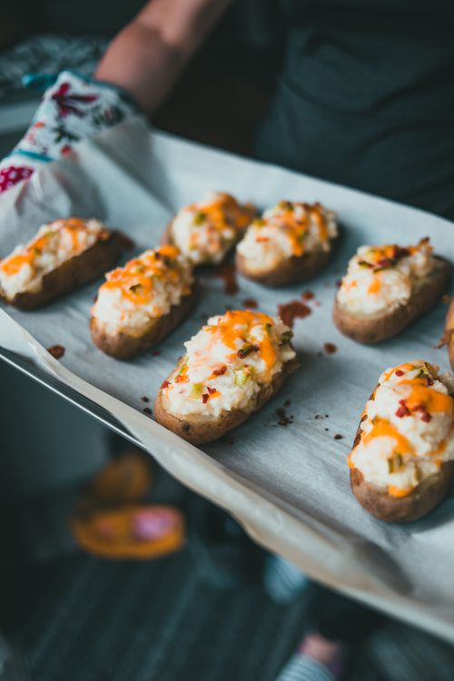
Loaded potato with cheddar, bacon, sour cream, and fresh chives; serving inspiration.
4 medium russet potatoes (about 8 oz / 225 g each)
1 tbsp olive oil
1 tsp kosher salt, divided
4 tbsp (56 g) unsalted butter
1 cup (100 g) sharp cheddar, grated
4 strips bacon, cooked crisp and crumbled
1/2 cup (120 g) sour cream
2 tbsp sliced chives or green onions
Black pepper, to taste
YOU'LL NEED Rimmed baking sheet, fork, small skillet
GRANDMA ROSIEFROM ROSIE'S KITCHEN
RECIPE 11 · COMFORT FOOD
Let's make it.
Loaded Baked Potatoes 70 min total
01
Heat and prep
Heat the oven to 425°F (220°C). Scrub and dry the potatoes. Pierce each one 6 to 8 times with a fork so steam can escape.
02
Bake until fluffy
Rub the skins with olive oil and 1/2 teaspoon salt. Set potatoes directly on a rimmed baking sheet and bake 50 to 65 minutes, turning once, until a knife slides easily into the center.
03
Cook the bacon
While the potatoes bake, cook bacon in a skillet until crisp. Drain, cool slightly, and crumble.
04
Fluff and load
Cut a slit down each potato and squeeze the ends gently to open. Fluff the inside with a fork, add butter, then cheddar, bacon, sour cream, chives, the remaining salt, and pepper.
05
Serve hot
Return the loaded potatoes to the oven for 2 minutes if you want the cheese extra melty. Bring them to the table while the centers are still steaming.
ROSIE'S TIP
Dry the skins before oiling them. If the skin isn't crisp, the potato is still wearing its pajamas.
MAKE AHEAD & STORAGE
Refrigerate un-topped baked potatoes for up to 4 days. Reheat at 375°F (190°C) until hot, then add fresh toppings. Do not leave cooked potatoes at room temperature for more than 2 hours.
SERVE IT WITH
A bowl of chili, a simple salad, or grilled chicken turns one potato into dinner.
Times are estimates. Oven and air-fryer performance varies by model.
GRANDMA ROSIECOMFORT FOOD
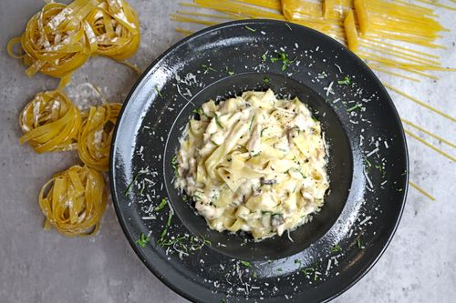
Creamy fettuccine finished with Parmesan and herbs; serving inspiration.
BOIL
Cook fettuccine; reserve pasta water.
SIMMER
Soften garlic; gently thicken cream.
TOSS
Coat ribbons with Parmesan sauce.
RECIPE 12 · COMFORT FOOD
Creamy Garlic Parmesan Pasta
Silky fettuccine, mellow garlic, cream, and a snowfall of Parmesan.
PREP10 minCOOK20 minTOTAL30 minMAKES4
Ingredients
Gather these first
12 oz (340 g) fettuccine
3 tbsp (42 g) unsalted butter
4 garlic cloves, finely minced
1 1/2 cups (360 ml) heavy cream
1 cup (95 g) finely grated Parmesan, plus more to finish
1/2 cup (120 ml) reserved pasta water, as needed
1/2 tsp kosher salt, plus more for the pasta water
1/4 tsp black pepper
2 tbsp chopped parsley, optional
YOU'LL NEED Large pot, 12-inch skillet, tongs, measuring cup for pasta water
GRANDMA ROSIEFROM ROSIE'S KITCHEN
RECIPE 12 · COMFORT FOOD
Let's make it.
Creamy Garlic Parmesan Pasta 30 min total
01
Boil the pasta
Bring a large pot of water to a boil and salt it until it tastes pleasantly seasoned. Cook fettuccine according to the package, stopping 1 minute before fully tender. Reserve 1 cup pasta water, then drain.
02
Soften the garlic
While the pasta cooks, melt butter in a large skillet over medium-low heat. Add garlic and cook 30 to 45 seconds, stirring constantly, until fragrant but not browned.
03
Make the cream sauce
Pour in the cream and bring to a gentle simmer. Cook 3 to 4 minutes, stirring, until slightly thickened. Lower the heat and whisk in Parmesan, salt, and pepper.
04
Toss until glossy
Add drained pasta and toss with tongs for 1 to 2 minutes. Add pasta water a splash at a time until the sauce coats every ribbon and looks silky.
05
Finish and serve
Taste for salt, scatter with parsley and extra Parmesan, and serve immediately. The sauce thickens as it stands, so keep a little pasta water nearby.
ROSIE'S TIP
Freshly grated Parmesan melts smoothly. The bagged stuff can clump up when it gets hot, and I don't need any more drama in this kitchen.
MAKE AHEAD & STORAGE
Refrigerate for up to 3 days. Reheat gently in a skillet with a splash of milk or water, stirring until hot; do not let the cream sauce boil hard.
SERVE IT WITH
Garlic bread and a crisp green salad are the classic partners.
Times are estimates. Oven and air-fryer performance varies by model.
GRANDMA ROSIEBURGERS & SANDWICHES
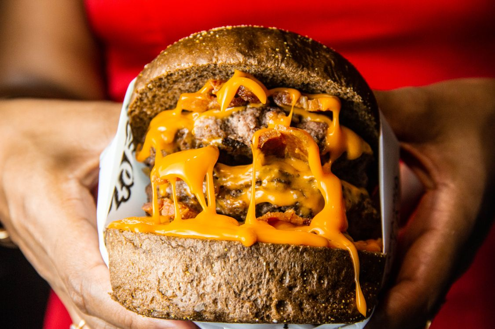
A bacon cheeseburger stacked with cheddar and classic toppings; serving inspiration.
PREP
Shape thick patties; cook the bacon.
SEAR
Cook beef safely; melt cheddar on top.
BUILD
Stack lettuce, tomato, bacon, and sauce.
RECIPE 13 · BURGERS & SANDWICHES
Diner-Style Bacon Cheeseburgers
A thick, juicy patty, crisp bacon, sharp cheddar, and a toasted bun.
PREP15 minCOOK15 minTOTAL30 minMAKES4 burgers
Ingredients
Gather these first
1 1/4 lb (570 g) 80/20 ground beef
8 strips bacon
4 brioche buns, split
4 slices sharp cheddar
1 tsp kosher salt
1/2 tsp black pepper
4 lettuce leaves and 4 tomato slices
1/4 cup (60 g) mayonnaise
1 tbsp ketchup and 1 tsp yellow mustard
YOU'LL NEED Large skillet or grill, instant-read thermometer, paper towels
GRANDMA ROSIEFROM ROSIE'S KITCHEN
RECIPE 13 · BURGERS & SANDWICHES
Let's make it.
Diner-Style Bacon Cheeseburgers 30 min total
01
Cook the bacon
Cook bacon in a cold skillet over medium heat, turning until crisp, 8 to 10 minutes. Transfer to paper towels. Pour off the grease and wipe the skillet carefully.
02
Shape the patties
Divide beef into four portions and shape gently into patties about 4 1/2 inches (11 cm) wide. Press a shallow dimple in the center of each so it cooks evenly. Season both sides with salt and pepper.
03
Sear and melt
Heat the skillet over medium-high. Cook patties 3 to 4 minutes per side, without pressing them, until the center reaches 160°F (71°C). Add cheddar during the last minute and cover briefly to melt.
04
Toast and assemble
Toast the buns cut-side down in the skillet. Stir mayonnaise, ketchup, and mustard. Spread sauce on the buns, then add lettuce, tomato, the patty, and two bacon strips.
ROSIE'S TIP
Don't press a thick patty with your spatula. You want the juices in the burger, not decorating the pan.
MAKE AHEAD & STORAGE
Refrigerate cooked patties and bacon separately for up to 3 days. Reheat patties to steaming hot and build fresh with lettuce and tomato.
SERVE IT WITH
Shoestring fries, onion rings, or a crunchy dill-pickle spear.
Times are estimates. Oven and air-fryer performance varies by model.
GRANDMA ROSIEBURGERS & SANDWICHES
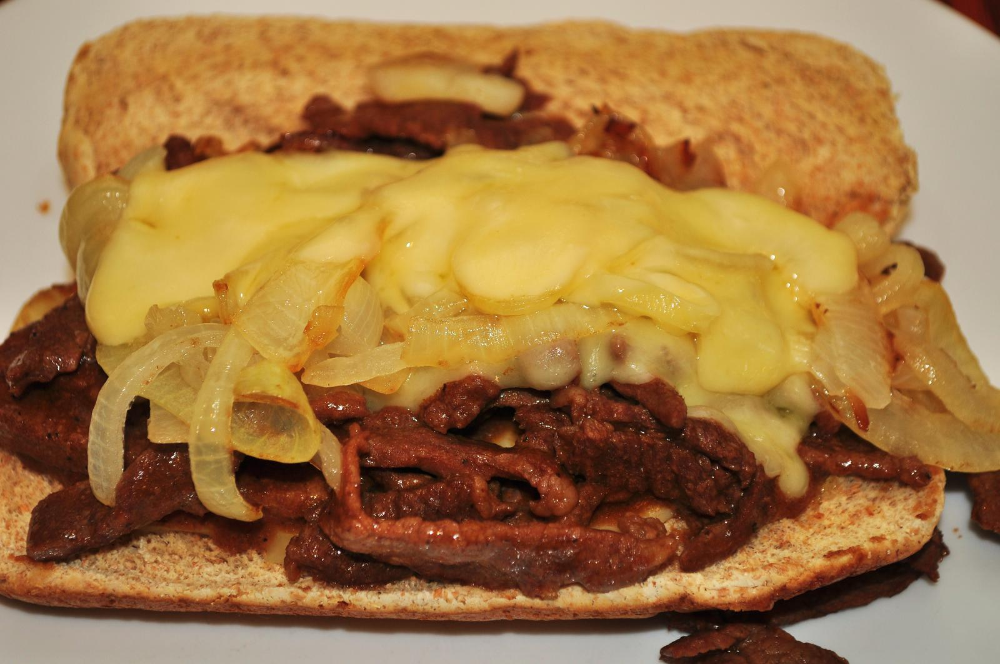
A classic cheesesteak with thin beef, onions, and melted cheese; serving inspiration.
SLICE
Shave steak; slice onions thin.
SEAR
Brown beef fast; melt provolone.
FILL
Tuck the cheesy pile into warm rolls.
RECIPE 14 · BURGERS & SANDWICHES
Philly-Style Cheesesteak Sandwiches
Thin-sliced beef, soft onions, and melted provolone tucked into warm rolls.
PREP20 minCOOK15 minTOTAL35 minMAKES4 sandwiches
Ingredients
Gather these first
1 lb (450 g) ribeye, very thinly sliced
1 large yellow onion, thinly sliced
1 green bell pepper, thinly sliced, optional Rosie-style addition
1 tbsp neutral oil
1/2 tsp kosher salt and 1/4 tsp black pepper
4 soft hoagie rolls
8 slices provolone cheese
1 tbsp butter, for the rolls
YOU'LL NEED Large griddle or wide skillet, sharp knife, tongs
GRANDMA ROSIEFROM ROSIE'S KITCHEN
RECIPE 14 · BURGERS & SANDWICHES
Let's make it.
Philly-Style Cheesesteak Sandwiches 35 min total
01
Make slicing easy
If the steak is not already shaved, place it in the freezer for 20 to 25 minutes until firm but not frozen solid. Slice as thinly as possible across the grain.
02
Soften the vegetables
Heat half the oil on a griddle or in a wide skillet over medium-high. Add onion and optional pepper. Cook 5 to 7 minutes, stirring, until soft and lightly browned. Transfer to a plate.
03
Sear the steak
Add the remaining oil. Spread steak in a thin layer and season with salt and pepper. Sear 1 to 2 minutes, turn, then chop and fold with a spatula until just cooked through.
04
Melt the cheese
Return the vegetables to the pan. Divide the mixture into four piles, cover each with two slices of provolone, and cover the pan for 30 to 60 seconds until melted.
05
Fill the rolls
Butter and toast the rolls cut-side down. Use a spatula to lift each cheesy pile into a roll. Serve while the cheese is still stretchy.
ROSIE'S TIP
The beef has to be thin and the pan has to be hot. Peppers are my house-style addition; leave them out for a more traditional order.
MAKE AHEAD & STORAGE
Refrigerate the cooked beef and onions for up to 3 days. Reheat in a skillet until steaming hot and fill fresh rolls; the bread is better toasted at the last minute.
SERVE IT WITH
Kettle chips, a sharp pickle, or a small cup of beef jus for dipping.
Times are estimates. Oven and air-fryer performance varies by model.
GRANDMA ROSIESWEET THINGS
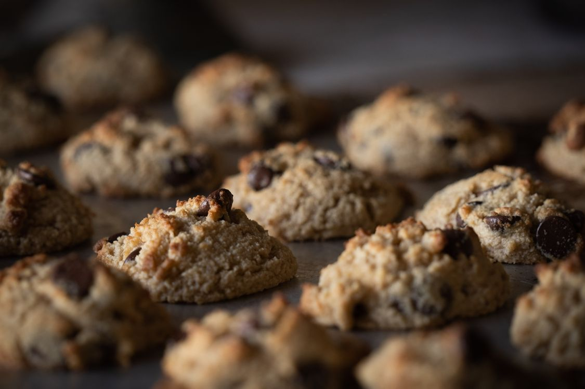
Freshly baked chocolate chip cookies with soft, chocolatey centers; serving inspiration.
MIX
Cream butter and sugars; fold in chips.
BAKE
Bake until the edges are golden.
COOL
Let the centers set on a cooling rack.
RECIPE 15 · SWEET THINGS
Classic Chocolate Chip Cookies
Crisp edges, soft centers, and chocolate in every bite.
PREP20 min + chillCOOK11 min / trayTOTALAbout 70 minMAKES24 cookies
Ingredients
Gather these first
2 1/4 cups (270 g) all-purpose flour
1 tsp baking soda
1 tsp kosher salt
1 cup (226 g) unsalted butter, softened
3/4 cup (150 g) packed light brown sugar
3/4 cup (150 g) granulated sugar
2 large eggs, room temperature
2 tsp vanilla extract
2 cups (340 g) semisweet chocolate chips
Flaky salt, optional
YOU'LL NEED Stand mixer or hand mixer, two baking sheets, parchment paper, cookie scoop
GRANDMA ROSIEFROM ROSIE'S KITCHEN
RECIPE 15 · SWEET THINGS
Let's make it.
Classic Chocolate Chip Cookies About 70 min total
01
Whisk the dry mix
In a bowl, whisk flour, baking soda, and salt. Set aside. Heat the oven to 350°F (175°C) and line two baking sheets with parchment.
02
Cream butter and sugars
Beat butter, brown sugar, and granulated sugar on medium speed for 2 minutes, until light and fluffy. Scrape the bowl. Beat in eggs one at a time, then vanilla.
03
Finish the dough
Add the flour mixture on low speed and mix just until combined. Fold in chocolate chips. Cover and chill the dough for 30 minutes; this keeps the cookies thicker and improves the flavor.
04
Scoop and bake
Scoop 2-tablespoon portions onto the sheets, leaving 2 inches (5 cm) between them. Bake one tray at a time for 10 to 12 minutes, until edges are golden and centers still look slightly soft.
05
Cool patiently
Sprinkle with flaky salt if you like. Let cookies rest on the tray for 5 minutes, then move to a rack. The centers finish setting as they cool.
ROSIE'S TIP
Pull the cookies while the centers still look a little underdone. Carryover heat finishes them; a clean toothpick would mean you waited too long.
MAKE AHEAD & STORAGE
Keep baked cookies airtight at room temperature for 4 days. Freeze scooped dough balls for up to 2 months and bake from frozen, adding 1 to 2 minutes.
SERVE IT WITH
A cold glass of milk, coffee, or a scoop of vanilla ice cream between two cookies.
Times are estimates. Oven and air-fryer performance varies by model.
GRANDMA ROSIESWEET THINGS
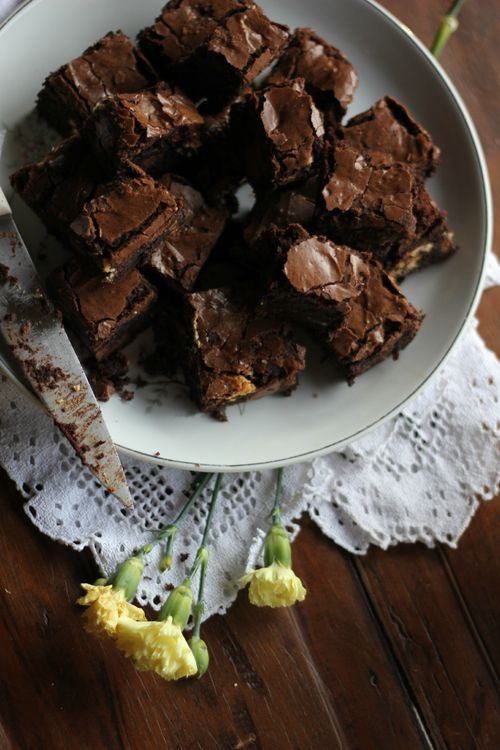
Rich chocolate brownies cut into neat squares; serving inspiration.
MIX
Whisk spread and eggs; fold in flour.
BAKE
Stop at moist crumbs on the tester.
SLICE
Cool fully; lift out and cut squares.
RECIPE 16 · SWEET THINGS
Three-Ingredient Fudgy Brownies
A small-pan brownie with a shiny top and a rich, chewy center.
PREP8 minCOOK20 minTOTAL28 min + coolMAKES9 to 12 squares
Ingredients
Gather these first
1 cup (about 300 g) chocolate-hazelnut spread
2 large eggs
1/2 cup (65 g) all-purpose flour
Flaky salt, optional; not counted among the three main ingredients
Three-Ingredient Fudgy Brownies 28 min + cool total
01
Prepare the pan
Heat the oven to 350°F (175°C). Line an 8-inch square pan with parchment, leaving two paper handles so the brownies lift out easily.
02
Mix the batter
Whisk the chocolate-hazelnut spread and eggs until glossy and smooth. Fold in the flour just until no dry streaks remain; overmixing makes a tougher brownie.
03
Bake
Spread the batter evenly into the pan. Bake 18 to 22 minutes, until the edges are set and a toothpick inserted near the center comes out with a few moist crumbs.
04
Cool before slicing
Sprinkle with flaky salt if desired. Cool in the pan for at least 30 minutes, then lift out and cut into 9 large or 12 smaller squares with a warm, clean knife.
ROSIE'S TIP
Brownies keep baking as they cool. If the toothpick comes out completely clean, you've gone one minute too far, dear.
MAKE AHEAD & STORAGE
Store airtight at room temperature for 3 days or refrigerate for up to 1 week. For extra fudgy slices, chill for 30 minutes before cutting.
SERVE IT WITH
Warm brownies with vanilla ice cream, or a little espresso if the grown-ups are staying up.
Times are estimates. Oven and air-fryer performance varies by model.
GRANDMA ROSIESWEET THINGS
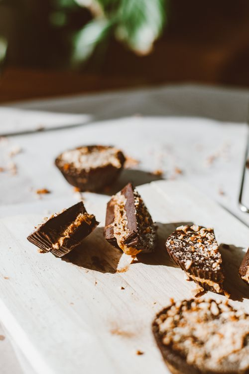
Chocolate shells filled with peanut butter; serving inspiration.
MELT
Make a thin chocolate shell in liners.
FILL
Add peanut filling; cap with chocolate.
SET
Chill until firm, then peel the liners.
RECIPE 17 · SWEET THINGS
Chocolate Peanut Butter Cups
A crisp chocolate shell and a soft, salty-sweet peanut center.
PREP20 minCOOKNo bakeTOTAL50 minMAKES12 mini cups
Ingredients
Gather these first
10 oz (285 g) semisweet chocolate, finely chopped or chips
1/2 cup (130 g) creamy peanut butter
1/4 cup (30 g) powdered sugar
1/8 tsp fine salt, optional
Flaky salt, optional for the tops
YOU'LL NEED 12-cup mini muffin pan, paper liners, microwave-safe bowl, small spoon
GRANDMA ROSIEFROM ROSIE'S KITCHEN
RECIPE 17 · SWEET THINGS
Let's make it.
Chocolate Peanut Butter Cups 50 min total
01
Line the pan
Place a paper liner in each cup of a mini muffin pan. Make room in the refrigerator or freezer for the pan to sit flat.
02
Melt the chocolate
Microwave the chocolate in a dry bowl in 20-second bursts, stirring each time, until smooth. Spoon about 1 teaspoon into each liner and tilt or brush it partway up the sides. Chill 5 to 8 minutes until firm.
03
Mix the filling
Stir peanut butter, powdered sugar, and optional fine salt until thick and smooth. Roll into 12 small balls and flatten each into a disk slightly smaller than the liners.
04
Fill and cap
Place a peanut-butter disk in each chocolate shell. Spoon remaining chocolate over the top to cover the filling. Tap the pan gently to level the tops.
05
Chill until set
Add a few flakes of salt if desired. Refrigerate 25 to 30 minutes, until firm. Peel away the liners and serve cool.
ROSIE'S TIP
Make sure the first chocolate layer reaches partway up the liner, or the peanut butter will try to escape out the sides.
MAKE AHEAD & STORAGE
Keep covered in the refrigerator for up to 2 weeks, or freeze for up to 2 months. Let stand 5 minutes before eating for the softest center.
SERVE IT WITH
A little bowl of berries or a cup of coffee balances the sweet chocolate.
Times are estimates. Oven and air-fryer performance varies by model.
GRANDMA ROSIESWEET THINGS
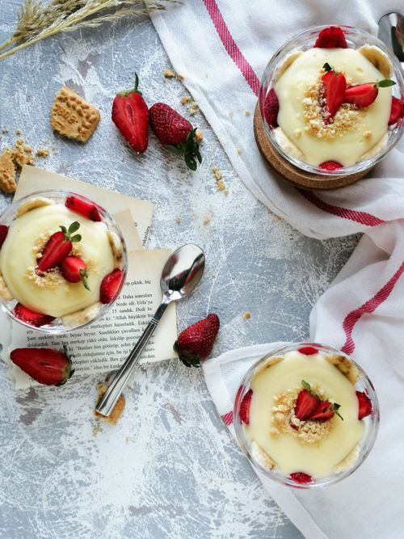
Layered strawberry dessert cups with cream and biscuit crumbs; serving inspiration.
CRUMB
Press buttery graham crumbs into jars.
FOLD
Fold whipped cream into cream cheese.
LAYER
Add berries and cream; chill to set.
RECIPE 18 · SWEET THINGS
No-Bake Strawberry Cheesecake Cups
Cool cheesecake cream, buttery crumbs, and bright strawberries layered in little jars.
PREP25 minCOOKNo bakeTOTAL2 hr 25 minMAKES6 cups
Ingredients
Gather these first
1 cup (100 g) graham-cracker crumbs
3 tbsp (42 g) unsalted butter, melted
8 oz (225 g) cream cheese, softened
1/2 cup (60 g) powdered sugar
1 tsp vanilla extract
3/4 cup (180 ml) cold heavy cream
1 1/2 cups (225 g) fresh strawberries, hulled and diced
2 tbsp strawberry jam
1 tsp lemon juice
YOU'LL NEED Six 6-oz (180 ml) jars or glasses, hand mixer, two mixing bowls
GRANDMA ROSIEFROM ROSIE'S KITCHEN
RECIPE 18 · SWEET THINGS
Let's make it.
No-Bake Strawberry Cheesecake Cups 2 hr 25 min total
01
Make the crumb base
Stir graham crumbs and melted butter until the mixture resembles damp sand. Divide among six jars and press gently with the back of a spoon.
02
Whip the cheesecake cream
Beat softened cream cheese, powdered sugar, and vanilla until smooth. In a second bowl, whip cold cream to medium-stiff peaks. Fold the whipped cream into the cream-cheese mixture in two additions.
03
Prepare the berries
Stir diced strawberries with jam and lemon juice. Let stand 5 minutes so the berries turn glossy and release a little juice.
04
Layer the cups
Spoon cheesecake cream over the crumb bases, add a layer of strawberries, then finish with another spoonful of cream and a few berries on top.
05
Chill and serve
Cover and refrigerate at least 2 hours, until the filling is cool and softly set. Keep chilled until serving.
ROSIE'S TIP
Use room-temperature cream cheese and cold heavy cream. One makes the filling smooth; the other gives it a lovely lift.
MAKE AHEAD & STORAGE
Cover and refrigerate for up to 2 days. Add the final fresh strawberry garnish just before serving. Do not freeze in glass jars.
SERVE IT WITH
A little lemon zest or a crisp shortbread cookie on the side.
Times are estimates. Oven and air-fryer performance varies by model.
GRANDMA ROSIEBREAKFAST & BRUNCH
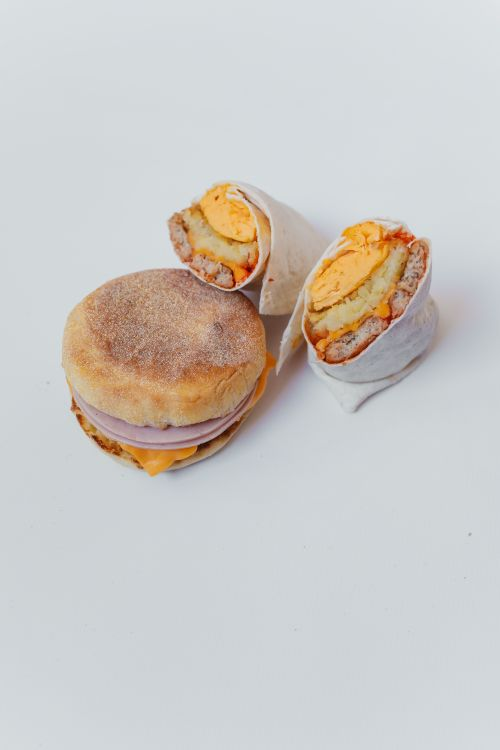
A breakfast burrito with egg, cheese, sausage, and crisp potatoes; serving inspiration.
PREP
Brown sausage; crisp the hash browns.
SCRAMBLE
Cook eggs; warm the tortillas.
ROLL
Fill, roll tight, toast the seam.
RECIPE 19 · BREAKFAST & BRUNCH
Sausage, Egg & Cheese Breakfast Burritos
A warm tortilla packed with fluffy eggs, breakfast sausage, crisp potatoes, and cheddar.
PREP10 minCOOK20 minTOTAL30 minMAKES4 burritos
Ingredients
Gather these first
4 large flour tortillas (10 inches / 25 cm)
8 oz (225 g) breakfast sausage
1 1/2 cups (225 g) frozen hash browns
4 large eggs
1 tbsp (15 ml) milk
1 tbsp (14 g) unsalted butter
1 cup (100 g) shredded cheddar
1/2 cup (120 ml) salsa, plus more to serve
Kosher salt and black pepper
YOU'LL NEED Large skillet, nonstick skillet, spatula, foil for freezing
GRANDMA ROSIEFROM ROSIE'S KITCHEN
RECIPE 19 · BREAKFAST & BRUNCH
Let's make it.
Sausage, Egg & Cheese Breakfast Burritos 30 min total
01
Brown the sausage
Cook sausage in a large skillet over medium heat, breaking it into crumbles, until browned and 160°F (71°C), about 7 to 8 minutes. Transfer to a plate.
02
Crisp the potatoes
Add hash browns to the same skillet. Spread them in a thin layer and cook undisturbed for 3 to 4 minutes, then turn and cook until crisp and golden.
03
Scramble the eggs
Whisk eggs with milk, a pinch of salt, and pepper. Melt butter in a nonstick pan over medium-low. Add eggs and stir gently until soft curds form and no liquid egg remains.
04
Fill and roll
Warm tortillas briefly so they bend easily. Divide sausage, potatoes, eggs, cheddar, and salsa down the center of each. Fold in the sides and roll tightly from the bottom.
05
Toast the seam
Return burritos seam-side down to a dry skillet over medium heat. Toast 1 to 2 minutes per side until golden and sealed. Serve with extra salsa.
ROSIE'S TIP
Warm tortillas roll without cracking. Cold tortillas have stage fright, and I can't blame them.
MAKE AHEAD & STORAGE
For freezing, leave out salsa, cool the fillings completely, roll, and wrap each burrito tightly in foil. Freeze up to 2 months. Reheat until the center reaches 165°F (74°C).
SERVE IT WITH
Salsa, avocado, hot sauce, or a few orange slices for a diner-style breakfast plate.
Times are estimates. Oven and air-fryer performance varies by model.
GRANDMA ROSIECOMFORT FOOD, WITH A TWIST
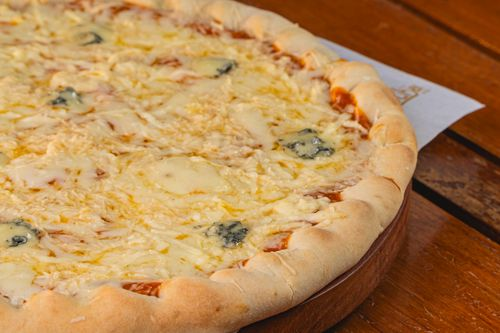
A golden cheese pizza; the cottage-cheese crust is a homemade variation.
MIX
Blend cottage cheese; mix soft dough.
BAKE
Par-bake crust, top, then bake again.
SLICE
Rest 3 minutes and cut into wedges.
RECIPE 20 · COMFORT FOOD, WITH A TWIST
Cottage Cheese Crust Pizza
A tender, golden cottage-cheese dough topped with tomato sauce and bubbling mozzarella.
PREP15 minCOOK25 minTOTAL40 minMAKES2 to 3
Ingredients
Gather these first
1 cup (225 g) cottage cheese, drained 10 minutes
1 large egg
1 1/4 cups (160 g) self-rising flour, plus extra for dusting
1/2 tsp dried oregano
1/3 cup (80 ml) pizza sauce
1 cup (100 g) shredded low-moisture mozzarella
1/3 cup sliced mushrooms, bell pepper, or pepperoni
1 tbsp grated Parmesan, optional
YOU'LL NEED Fine-mesh sieve, food processor or blender, mixing bowl, parchment, sheet pan
GRANDMA ROSIEFROM ROSIE'S KITCHEN
RECIPE 20 · COMFORT FOOD, WITH A TWIST
Let's make it.
Cottage Cheese Crust Pizza 40 min total
01
Heat the oven and drain
Heat the oven to 400°F (200°C). Set cottage cheese in a fine-mesh sieve for 10 minutes to remove excess liquid. Blend until smooth.
02
Mix the dough
Whisk the blended cottage cheese and egg together. Add self-rising flour and oregano; stir until a shaggy dough forms. Turn onto a floured surface and knead gently for 1 to 2 minutes. If it is very sticky, add flour 1 tablespoon at a time.
03
Shape and par-bake
Press or roll the dough on parchment into a 10-inch (25 cm) round, about 1/4 inch (6 mm) thick. Transfer parchment and dough to a sheet pan. Bake 14 to 16 minutes, until the surface looks set and the edge is lightly golden.
04
Add the toppings
Spread on pizza sauce, leaving a small border. Add mozzarella, chosen toppings, and Parmesan. Return to the oven for 7 to 9 minutes, until the cheese bubbles and the crust is golden underneath.
05
Rest and slice
Let the pizza stand for 3 minutes before slicing. The crust firms as it cools slightly. Add basil or red-pepper flakes if you like.
ROSIE'S TIP
Drain the cottage cheese first. Extra water is the enemy of a crisp crust, and the sieve is a lot easier than arguing with the oven.
MAKE AHEAD & STORAGE
Refrigerate slices for up to 3 days. Reheat on a hot sheet pan or in a skillet until the crust is crisp and the center is steaming. Protein content varies by brand and serving size.
SERVE IT WITH
A simple Caesar salad or crunchy vegetables. For another variation, add cooked chicken and spinach.
Times are estimates. Oven and air-fryer performance varies by model.
GRANDMA ROSIEIMAGE CREDITS
A NOTE ABOUT THE PHOTOGRAPHS
Image credits & use.
Every recipe includes three original vector illustrations for the prep, cooking, and serving stages. Recipes 01–10 use original AI-generated finished-dish images; recipes 11–20 use stock food photographs for serving inspiration.
11 · Loaded Baked PotatoesPexels stock photo, used under the Pexels License; attribution is optional.Pexels photo ID 9203752Open source photo page12 · Creamy Garlic Parmesan PastaPexels stock photo, used under the Pexels License; attribution is optional.Pexels photo ID 14930758Open source photo page13 · Diner-Style Bacon CheeseburgersPexels stock photo, used under the Pexels License; attribution is optional.Pexels photo ID 3826273Open source photo page14 · Philly-Style Cheesesteak SandwichesPhoto by jeffreyw via Wikimedia Commons, licensed CC BY 2.0. Full attribution is on the Image Credits page.Open source photo page15 · Classic Chocolate Chip CookiesPexels stock photo, used under the Pexels License; attribution is optional.Pexels photo ID 1775283Open source photo page16 · Three-Ingredient Fudgy BrowniesPexels stock photo, used under the Pexels License; attribution is optional.Pexels photo ID 15033482Open source photo page17 · Chocolate Peanut Butter CupsPexels stock photo, used under the Pexels License; attribution is optional.Pexels photo ID 5846197Open source photo page18 · No-Bake Strawberry Cheesecake CupsPexels stock photo, used under the Pexels License; attribution is optional.Pexels photo ID 7552591Open source photo page19 · Sausage, Egg & Cheese Breakfast BurritosPexels stock photo, used under the Pexels License; attribution is optional.Pexels photo ID 5848083Open source photo page20 · Cottage Cheese Crust PizzaPexels stock photo, used under the Pexels License; attribution is optional.Pexels photo ID 33458021Open source photo page
Pexels photos are used under the Pexels License (free use; attribution not required). Recipe 14: “Philly cheesesteak sandwich.jpg” by jeffreyw, licensed CC BY 2.0 via Wikimedia Commons; cropped for layout. The photos are illustrative; your finished dish may look different. Grandma Rosie is a fictional cooking persona.
GRANDMA ROSIEONE LAST THING
FROM ROSIE'S TABLE
Make it yours.
Swap a topping, make the sauce a little spicier, or write down the change that made everyone ask for seconds. The best family recipe is the one that gets cooked again.
MY KITCHEN NOTES
Cook times are estimates. Use safe internal temperatures and follow your appliance instructions. Created in English for the Grandma Rosie American comfort-food collection · 2026